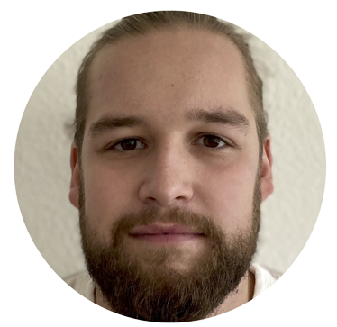

Current Group Members
|
Danqi Lang Masters student Simulations of glassy liquids |
 |
Lars Kuerten PhD student. Nucleation in hard spheres |
||
|
Rui Cheng PhD student jointly supervised with Malcolm Fares, Bayer Cropscience. The mechanism of gel collapse. |
Abraham Mauleon Amieva Postdoc. Phase behaviour of novel active matter systems |
Former Group Members
PostdocIoatzin Rios de Anda
PhD 2018,
Thesis: Self-Assembly of Multiple Soft Matter Systems
Postdoc 2019-2022,
Research Scientist, Syngenta.
Josh Robinson
PhD 2019.
Thesis: Quasi-equilibrium approaches to the high-density liquid
Postdoc 2020-2021,
Humboldt Research Fellow 2020-2022,
Postdoc Johannes Gutenberg University Mainz 2022-.
Francesco Turci
Postdoc 2014-2018,
Postdoc University of Bristol 2019-2022,
Lecturer in Physics, University of Bristol, 2023-
Nariaki Sakai
Postdoc 2017-2019,
Postdoc ESPCI Paris 2020-2021,
Research, Saint Gobain, 2022-
Ian Williams
PhD 2014,
Thesis: Colloids in optically defined confinement
Postdoc 2013-2014,
Postdoc UCSB 2016-2018,
Postdoc UCL Chemistry 2018-2020,
Postdoc University of Surrey 2020-.
Link to personal page
James Hallett
Postdoc 2015-2018,
Postdoc Oxford University 2018-2021,
Lecturer in Physical Chemistry, University of Reading 2022-
Julien Lam
Postdoc 2015-2016
Postdoc with James Lutsko
Postdoctorant CNRS
Université Libre de Bruxelles
Katherine Skipper
PhD 2023.
Thesis: Dipolar colloids: Higher-order structure, activity and phase behaviour
Scientific Journalism at the Institute of Physics
Wahab Kawafi
PhD 2023.
Thesis: Quantitative 3D Bioimaging Using Machine Learning
Laurent Vaughan
PhD 2023.
Thesis: A Real Space Study of Self-Assembly Mechanisms in Complex Colloidal Systems
Max Kloucek
PhD 2023.
Thesis: Inferring Criticality in Neural Networks
Jingwen Li
PhD 2023.
Thesis: Self-Assembly of Model Isotropic and Anisotropic Colloids and Proteins: a Real Space Analysis
Lab teacher and technician, School of Physical Science and Technology, ShanghaiTech University
Levke Ortleib
PhD 2022.
Thesis: Measuring excitations, mobile regions and local structure in deeply supercooled liquids
Fergus Moore
PhD 2022.
Thesis: Crystallisation and Confinement of Mesoscale Active Matter
Yushi Yang
PhD 2022.
Thesis: Observing, Analysing, Modelling, and even Changing the Behaviour of Zebrafish
Algorithm developer in MGI Tech, Shanghai
Sian Fussell
PhD 2021.
Thesis: Phase behaviour of temperature responsive microgels
Chief Scientific Officer, Albotherm 2021-
Jun Dong
PhD 2020.
Thesis: Microfluidic Emulsification and Force Transmissions in Colloidal Systems
Postdoc, Bayer AG 2020-
Nicholas Wood
PhD 2019.
Thesis: Hard Sphere Nucleation Rates
Peter Crowther
PhD 2019.
Thesis: Structure and Lengthscales in Glassy Systems
Research Software Engineer at the University of Manchester
Azaima Razali
PhD 2018
Thesis: Self Assembly in Gel Systems
Lecturer, Department of Chemistry, Kulliyyah of Science, International Islamic University Malaysia
Rattachai Pinchaipat
PhD 2018
Thesis: The Colloidal Glass Transition: A Non-Equilibrium Perspective
Lecturer, Department of Physics, Faculty of Science, Burapha University, Thailand
Max Meissner
PhD 2017.
Thesis: Microfluidics on the colloidal scale
Postdoc at Warwick Physics with Vassily Kantsler.
Rhiannon Pinney
PhD 2017
Thesis: Recasting a model atomistic glassformer into an effective system of icosahedra
Maths Teacher, Katharine Lady Berkeley School, Wootton-Under-Edge
Andrew Dunleavy
PhD 2015.
Thesis: Applying Information Theory to Super-cooled Liquids
Masters in Complexity Science 2011.
Jade Taffs
PhD 2015.
Thesis: Local structure in crystallization
BSc 2010. Analyst at HEFCE.
Isla Zhang
PhD 2014.
Thesis: A Real-Space Study of Phase Behaviour and Slow Dynamics in Colloid-Polymer Mixtures
Alex Malins
PhD 2013.
Thesis: A Structural Approach to Glassy Systems
Masters in Complexity Science 2009. Postdoc at the Japanese Atomic Energy Authority, Kashiwa, Tokyo.
Georgia Evers
MSci 2019, RA in Royall Group
Sam Griffiths
MSci 2016, PhD in Edinburgh with Wilson Poon
Jun Dong
2015 Masters in Functional Nanomaterials, PhD in Royall group
James Hicks
MSci 2015, Masters in Applied Mathematics at King's College London
Amy Heward
MSci 2015, UK government
Richard Buxton
MSci 2015, TeachFirst
Lizzie Mould
MSci 2014, Masters by research in Bristol Chemistry
Peter Crowther
MSci 2014, PhD in Royall group
Ioatzin Rios de Anda
2014 Masters in Functional Nanomaterials, PhD in Royall group
Nick Wood
2014 Masters in Functional Nanomaterials, PhD in Royall group
Tony Cartwright
2013 Masters in Functional Nanomaterials, RA at Los Alamos
Jamie Worth
2013 Masters in Functional Nanomaterials
Andrew Gray
MSci 2013, Eng Doc in Birmingham
Shelley Taylor
MSci 2012, PhD at Birmingham University Centre for Doctoral Training in Medical Imaging
Maia Godonoga
Summer Student 2010, PhD with Jonathan Heddle, RIKEN, Tokyo
Monica Moreno
Erasmus 2008, Lab manager in the Basque Country
Rebecca Rice
BSc 2008 and Masters by Research 2009